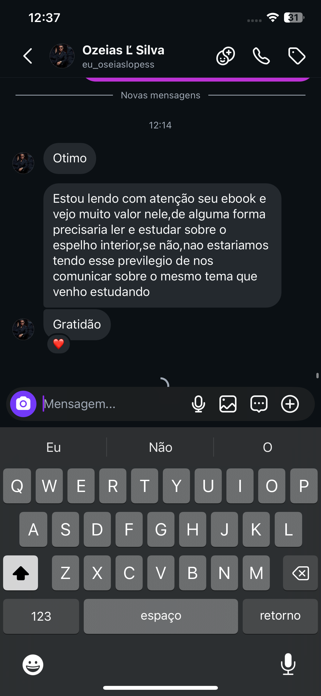

Entende por que algumas pessoas enxergam o jogo enquanto outras apenas reagem, e por que perceber cedo costuma vir acompanhado de solidão.
Para quem capta o que os outros não dizem — e cansou de duvidar de si.
Você não está exagerando. Você percebe antes.
Um guia para compreender o que não é dito, reconhecer padrões e confiar na própria percepção.
Quero confiar na minha leitura · R$ 29,90Pix ou cartão · Garantia de 7 dias · Pagamento seguro pela Hotmart
01 O reconhecimento
Isso soa familiar?
Você sente que algo está errado antes de qualquer prova aparecer.
Você percebe o tom que muda, a resposta que demora, o silêncio onde deveria haver coerência.
Já ouviu “você pensa demais” ou “isso é coisa da sua cabeça” e passou a duvidar de si.
Sai de certas conversas com a energia drenada, sem ter havido briga.
Gasta tempo explicando o que sente para quem não quer entender.
Se você se reconheceu em dois ou mais, este livro foi escrito para você.
02 O ruído
Um guia de leitura rápida para separar padrão de ansiedade, confiar na sua leitura e se posicionar sem confronto.
O problema não é perceber demais. É não ter onde colocar o que você percebe.
Quem percebe cedo costuma ouvir que está exagerando. Aos poucos, deixa de confiar na própria leitura. Passa a revisar o que viu, não porque estava errado, mas porque ninguém sustentou. O resultado é dúvida constante, justificativa em excesso e cansaço de absorver o que não é seu.
03 O método
O Código Silencioso organiza o que você já percebe.
Ele devolve precisão ao que você sente e transforma percepção em critério, para você observar com clareza, escolher onde investir sua energia e se posicionar sem confronto.
O que ele não é: não é terapia, não substitui acompanhamento psicológico ou psiquiátrico, não é manual para manipular ninguém e não serve para rotular ou diagnosticar as pessoas à sua volta.
04 A mudança
Ao terminar a leitura, você vai conseguir:
- 01Distinguir lucidez de ansiedade. Saber quando é um padrão (repetição e coerência ao longo do tempo) e quando é só um evento isolado.
- 02Parar de se justificar por perceber. Lidar com quem minimiza sua leitura sem entrar em debate.
- 03Ler o que não é dito. Tom, tempo de resposta, silêncio e incoerência entre corpo e discurso.
- 04Entender como a manipulação se sustenta. Ela depende de confusão, pressa e reação. Você vai ver o que muda quando você não alimenta isso.
- 05Usar a escuta e o silêncio com estratégia. Deixar o comportamento do outro se revelar, sem confrontar.
- 06Proteger sua energia. Limites que você pratica, em vez de anunciar, e menos absorção do caos alheio.
- 07Reconhecer maturidade emocional real e escolher melhor quem tem acesso a você.
No fim, a mudança é simples: você confia mais no que percebe e decide com mais clareza.
“Você não percebe demais. Você percebe antes.”
“Percepção não pede reação imediata. Pede tempo, integração e critério.”
“Você não precisa vencer o jogo. Precisa apenas não fornecer as peças.”
05 O objeto
Um livro para ler devagar, e voltar a ele.
O Código Silencioso organize o que você já percebe em um percurso preciso: da leitura do cenário à decisão sem confronto.
- FormatoPDF
- Estrutura8 capítulos com aplicações práticas para o dia a dia + introdução, conclusão, material de apoio e fontes
- LeituraCelular, tablet ou computador
- EntregaAcesso imediato após o pagamento
- ExtrasChecklist de integração incluído no e-book, para acompanhar sua evolução

A capa original do e-book
06 O dossiê
O que tem dentro
Descobre como o cérebro capta sinais antes do ruído (ínsula e córtex pré-frontal) e por que entender tudo virou uma defesa, a intelectualização.
Aprende a diferenciar sensibilidade emocional de leitura de cenário, e por que os mais atentos são os primeiros a serem invalidados.
Vê como funcionam pessoas que dependem de confusão para manter controle, e por que perdem força diante de quem observa com calma.
Passa a notar incongruências que a maioria não vê: o corpo, o tom e o que se revela sem palavras.
Pratica a escuta estratégica (deixar o outro se expor), os testes sem confronto e o silêncio como vantagem.
Aprende a não absorver o caos alheio, a criar limites que protegem sem explicação e a entender o afastamento como preservação.
Para de se justificar por enxergar demais e passa a usar a percepção como filtro, não como fardo.
Reconhece maturidade emocional real e decide com mais critério quem tem acesso a você.
Sai com um caminho para viver a partir de uma leitura mais clara e de decisões sem confronto.
Acompanha a própria integração ao longo do tempo, voltando ao checklist depois de interações que geram dúvida ou desgaste.
Referências científicas que sustentam o conteúdo (Damasio, LeDoux, Kahneman, Judith Herman, entre outros).
Cada capítulo traz abertura, contexto psicológico, explicação central, aplicação imediata, reenquadramento e integração. Você sempre termina com algo para praticar.
07 As vozes
O que disseram sobre o Guia
Os prints abaixo são mensagens sobre o Guia em PDF distribuído gratuitamente. Não são avaliações de O Código Silencioso.

“Estou lendo com atenção seu e-book e vejo muito valor nele.”
“Acabei de ler seu guia e gostei demais. Você escreveu tudo numa linguagem clara e profunda.”
08 O limite
Um critério honesto antes de seguir.
É para você se:
- você percebe com facilidade o que as pessoas não dizem e se cansa de se explicar;
- quer parar de duvidar da própria leitura sem virar alguém desconfiado;
- quer aprender a se posicionar sem confronto e a proteger sua energia.
Não é para você se:
- você procura tratamento ou acompanhamento terapêutico (o livro não substitui um profissional);
- quer usar o conteúdo para manipular ou “vencer” pessoas;
- está em situação de violência ou risco. Nesse caso, busque ajuda agora: ligue 190 em emergência ou 180 (Central de Atendimento à Mulher).


Acesso imediato · PDF
10 A oferta
O Código Silencioso
Checklist de integração incluído no e-book
Ao longo da leitura, um checklist para acompanhar sua evolução ao longo do tempo — não é feito para ser preenchido uma única vez.
R$ 29,90pagamento único
Quero confiar na minha leitura
7 dias de garantia. Leia, aplique e, se sentir que o livro não é para você, peça o reembolso pela Hotmart dentro de 7 dias.
Pix ou cartão · Garantia de 7 dias · Pagamento seguro pela Hotmart
11 Perguntas frequentes
Antes de decidir
O livro é sobre relacionamento abusivo ou narcisismo?
Ele trata de padrões de manipulação e de como se posicionar diante deles. Não é um manual de saída de relação abusiva e não substitui acompanhamento profissional.
Serve para o trabalho, a família e o relacionamento?
Sim. Os padrões e as ferramentas servem para qualquer contexto em que você lê pessoas — em casa, no trabalho ou nos vínculos afetivos.
Serve para homens e mulheres?
Sim. É para qualquer pessoa que se reconhece em quem percebe cedo e cansa de se justificar.
Preciso de conhecimento prévio?
Não. A linguagem é direta e cada capítulo termina com aplicações práticas.
Quanto tempo leva para ler?
São 8 capítulos curtos. Cada um pode ser lido em um momento de pausa do seu dia, e os exercícios podem ser feitos no seu ritmo.
Como recebo o livro?
Por e-mail e na área de membros da Hotmart, logo após a confirmação do pagamento.
Posso pedir reembolso?
Sim, em até 7 dias. Basta solicitar diretamente pela Hotmart, sem precisar explicar o motivo.
É seguro comprar pela Hotmart?
Sim. O pagamento é processado pela Hotmart, plataforma usada por milhares de produtores no Brasil. Você pode pagar com Pix ou cartão e tem 7 dias de garantia.
O último código
Você sempre percebeu. Agora é hora de confiar na sua própria percepção.
Quero confiar na minha leitura · R$ 29,907 dias de garantia · Acesso imediato · Pagamento seguro pela Hotmart